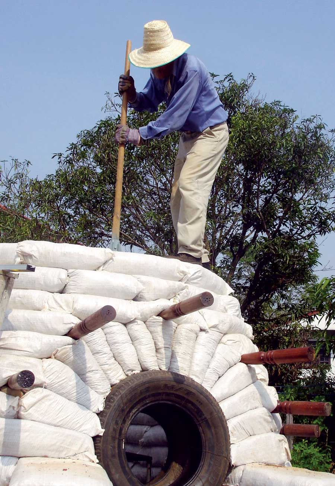
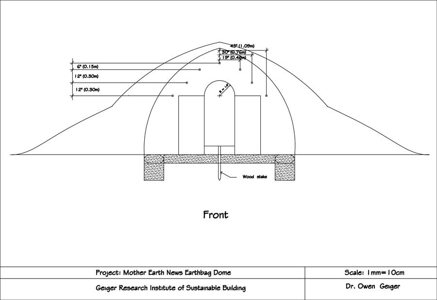

One of the most practical structures on a small farmstead is a multi-purpose garden structure that can serve as a storage shed or cool pantry above ground, or as a root cellar or storm shelter below ground. You can build this multipurpose structure for about $300 using earthbag construction (bags filled with earth and stacked like bricks). And the skills you learn by building the dome will serve you well if you plan to build a larger earthbag structure - or even an earth home.
In many cases, no building permit will be needed for this little building, because it’s below the minimum size required by most building codes (for structures that are not inhabited and not attached to a residence). But because codes vary by region, check your local building regulations before you begin.
Earthbag structures provide a cool space in summer and an escape from the cold in winter, which means this earthbag dome is well suited for many purposes. Depending on your needs, the most practical combination of uses might be a root cellar/cool pantry for daily use and a disaster shelter for emergencies such as tornadoes or hurricanes.
The earthbag dome has a natural look and blends in with the land. It has a solid, organic feel - just what you’d expect from a design inspired by nature that has been combined with a little modern ingenuity and thousands of years of earth- and dome-building wisdom.
No expensive forms or equipment are needed with earthbag building, and the technique is faster and easier than other earth-building styles - including cob, rammed-earth tire construction and adobe (if you have to make your own bricks). Earthbag buildings are more water resistant than those made with straw bales, making them suitable for earth-bermed and below-grade structures. If your site is susceptible to flooding, earthbag building is one of the best options - after all, sandbags have a long history of use for flood control. Just use an appropriate fill material, such as gravel, in lower courses.
The cost of building with earthbags varies. You can almost build free if you take the time to scrounge the materials, (used poly bags and barbed wire, recycled wood, and local soil and gravel). Few tools are required. Here's a “middle of the road” cost estimate that assumes you’ll buy the major items but also take time to shop around. For example, if you don’t have used polypropylene bags, you can almost certainly find a local farmer who does.
The most significant advantage to building with bags is the simplicity of the process. No special skills are required: Fill bags with earth and tamp them solid. Building with bags requires a lot of physical effort, but brute strength is not necessary because each step can be done a little at a time at a comfortable pace.
Earthbag domes are incredibly strong and hold up well in hurricanes, tornadoes and earthquakes. After being plastered or bermed with earth, they are virtually fireproof. A properly constructed earthbag structure approaches the strength of stone, at a fraction of the cost, labor and necessary skills.
This earthbag shed is 8 feet in diameter inside (about 11 feet outside) and approximately 8 feet high. Plans could be scaled up to create 10- to 16-foot diameter domes. At the top of a larger dome, the earthbag thickness and cantilever (corbel distance) have to be adjusted slightly so it’s more conical.
Any building project can be dangerous, so stay alert while working. Until all the bags are in place and locked together, there’s a risk that they might fall, causing damage or injury.
View the Earthbag Building Materials Costs chart for a list of materials and prices.
Free or Low-cost Items:
Tools
Interior diameter: 8 feet
Exterior diameter: approximately 11 feet
Interior height: 7 1/2 feet
Exterior height: approximately 8 1/2 feet
The corbelled dome is constructed with horizontal courses of polypropylene bags with each course inset from the previous course. The inset starts out at about 1 inch at the bottom and increases to about 5 inches on upper courses.
There are several building options:
For maximum efficiency as a root cellar, build the dome into the side of a gently sloping hill. The earth will naturally moderate temperature swings. This also eliminates the need to purchase/haul backfill. Note: we didn’t have a hill on our land, so we had to truck in backfill to create a berm around our dome.
If the dome will be used for food storage, consider locating it within a convenient distance of the kitchen.
The first two courses of bags are complete circles bonded with barbed wire. Succeeding courses start at either side of the door opening.
Orient the building so the door is opposite prevailing storms and wind.
Create a slope in front of the dome so water drains away from the door.
One work crew of two or three people is probably best for a structure this size. It’s also convenient to have an extra person to run errands.
Have someone in charge watch over every process. In our case, I was usually the bag filler and the one placing bags in position. This allowed me to observe each of the following steps:
Road base: A special clay/gravel mixture used to build roads. Most soils will work just fine.
Gravel: Use in rubble trench foundation, first two courses of bags (to prevent wicking), floor and area in front of door.
String lines: The center string line establishes the circular shape and is lengthened accordingly to measure each course. The string line that establishes the vertical dome curvature remains a constant length of 112 inches.
Bags: You can find woven polypropylene bags by searching for “poly sandbags” online. This type of bag is used for grain, animal feed, fertilizer and flood control - so your local hardware or feed store may sell them. For the best deal, look for misprinted or barely used bags. Most empty bags measure 18 by 30 inches when flat. Another common size is approximately 20 by 36 inches. Although this larger size will work for the dome, the smaller size bags are easier to handle and create a tight radius for a small dome.
Bag filling: You can fill the bags using heavy-duty 2-gallon plastic buckets, which are small enough to handle comfortably. Most bags need four buckets of road base to be filled to capacity. In some cases, only three buckets of road base are necessary to make a shorter bag to avoid ending a bag above a previous joint. Two rounded shovelfuls of road base fill a 2-gallon bucket perfectly. Or use a sturdy hoe or similar digging tool to reduce shoveling. Even though shoveling is faster, it’s easier to pull the material into a bucket than to lift the material with a shovel. On the last stroke, a quick flick of the hoe will tilt the bucket upright. To keep bags open when filling, use a “bucket chute,” a funnel made by cutting the bottom inch off of a 4-gallon bucket.
Placing bags: On a dome this size, about two to four courses can be laid each day, depending on the strength, endurance and skills of the crew. Small, upper courses go a little faster. Pace yourself, take frequent breaks and allow ample time to study the plans. Just one mistake could cause a lot of extra work.
Tamping: We used two tampers: an agile 45-inch one for tamping bag contents during filling, and a 55-inch one. Both can be used for tamping walls, but the long-handled version is easier to apply more force. Each one is made with a 6-by-6-by-3/8-inch plate-steel base, 3/8-inch angled steel ribs, and a 1 3/4-inch pipe to hold the wood handle, which is bolted on. You could also buy one for about $10.
Leveling: Usually just a few bags per course required a little extra tamping. I attribute this to measuring the contents of each bag and placing them with a bit of care.
Retaining walls: The walls in front of the dome prevent backfill and excess water from spilling into the entrance area. They also serve as buttresses and seating. Rebar pins through the bags add reinforcement. You might want to vary the stepped design on the retaining wall slightly and round the plaster edges a little to create a more natural look. Consider using plastic plaster mesh because it won’t rust. Attach the mesh directly to the bags with 1 1/2-inch roofing nails. Plaster with two coats of lime plaster: one part lime to 2 1/2 or three parts of clean builder’s sand. After the plaster is dry, add plastic sheeting behind the retaining wall for added protection against moisture damage. Add another layer of plastic after most of the backfill is complete. Use bitumen to create a waterproof seal between the plastic and the back side of the retaining wall.
Arch form: We experimented with old tires to form the door arch, because the time and cost of building a curved form with plywood didn’t make sense. We used wood supports under each side of the tires, which were braced side-to-side. This created an opening so we could check the curvature with the string line.
Door arch: The semicircular Roman door arch is made with 12-inch-long bags filled from above and tamped with an improvised tamping rod (tree branch). Additional tamping from the sides with a 2-by-4 tamping board creates the necessary taper. You can eyeball the taper, as we did, or set up a string line.
Door: After all the bags have been laid, make a door frame to fit the space. We used 1-by-2-inch rectangular steel tubing for the sides and bottom of the frame, and an 1/8-by-2-inch steel plate bent to an arch for the top. Try to find recycled wood for the door. A curved branch would make a nice rustic handle. We used a cabinet handle. Weld a hasp to the frame if you want a padlock. Make one or more screened openings in the door for ventilation.
Eyebrow (Awning): Use seven peeled, rot-resistant 32-inch wood poles, approximately 3 inches in diameter. Western juniper, a common wood for fence posts in the western United States, is an excellent choice. Likewise, use 3/4- to 1-inch diameter peeled juniper branches to cover the eyebrow. Add plaster mesh and lime plaster on the top.
Plaster the entire dome. This is the fastest, easiest option to protect the dome if all you need is a tool shed or basic shelter. Mesh isn’t required, although it’s recommended on the areas previously mentioned.
Create a living roof with backfill and plants. A living roof is especially appealing and worth the extra effort. This option is best approached as a labor of love because it is time-consuming. Small terraces slow water runoff and make working on the dome much easier. We chose a drought-resistant sod that’s used by the highway department, and getting it established was still tricky because water runs off the steep areas quite rapidly. Our plan is to use the sod to anchor the soil, then gradually add lots of plants and flowers for a more natural look and the pleasure of harvesting fresh herbs.
First, cover the entire dome with 6-mil black plastic by overlapping two 12-foot wide pieces. Add backfill in layers at a 45-degree slope by walking on it and tamping lightly. After the backfill is nearly up to the desired level, cover the entire surface (including the backfill) with 6-mil black plastic. Add a third layer of plastic on the top, down to the eyebrow level.
Next, add poly fishnet over the entire dome to give the soil and roots something to grab onto. We used poly shade screen on the top, but we discovered fishnet works better and is less expensive. Starting at the bottom, add a 3- to 4-inch layer of soil on top of the fishnet. Randomly shoveling earth could leave thin spots. Instead, work methodically to cover one area at a time. Tamp as you go to keep soil in place. The top of the dome requires extra care. We made an 8-inch “wall” around the sides and back of the dome with lots of stomping.
The steep areas on either side of the eyebrow and the area near the top call for a different method. Use your hands to create a miniature earth wall with a flat ledge on top. A soil with high clay content works best in these areas. After final shaping and raking, add more fishnet to the top quarter of the dome to help hold the sod in place. Then add sod and/or plants. You’ll need about 70 square yards. We used 2-inch-long pieces of split bamboo to hold the sod in position until the roots became established. One sprinkler on the top will water the entire living roof if you have good water pressure.
Day 1: Use temporary stakes to mark building location. Remove and stockpile topsoil (to cover the dome later), then level the building site. Stockpile road base around the dome site in a continuous U-shaped pile about 4-feet high by 8-feet wide at the base.
Day 2: Place a permanent stake to mark the center of the dome, and attach a string line to measure 4 feet to where the inside edge of the first course (row) of bags will be. Measure and stake out where the retaining walls will go. Make a rubble trench foundation (trench filled with gravel) at least several inches larger than the width of your bags, digging down to solid mineral soil (often a sand/gravel/clay consistency). A rubble trench foundation eliminates the need to go below frost line.
Make the rubble trench foundation under the retaining walls at the same time. Fill the trench with 4- to 6-inch layers of tamped 3/4-inch crushed aggregate until 6 inches below finish grade (the top of where the soil was before you dug the foundation). A special mix of aggregates, “5/8-inch minus,” also works well. Place the first course of gravel-filled earthbags, double-bagged for extra strength, in the trench. It takes three 2-gallon buckets of gravel to fill a bag. To avoid folded bag ends protruding from the wall, simply fold the ends toward the middle of the bag and then tuck them underneath as they’re placed. The top of the first course will be right at finish grade. Tamp the course after all bags are in place. Then lay one strand of barbed wire down the center (two strands if the dome is more than 14 feet in diameter), held in place with bricks or rocks. (You can see the barbed wire on the first course of bags in the image gallery.)
Overlap the ends of the barbed wire about 12 inches and fasten them together with tie wire. Repeat the process for the second course, overlapping each joint and tamping each course after the bags are in place. Starting with the second course, fill each bag on the wall on a sheet metal slider. This enables bags to be adjusted. Lift the bag slightly and remove the slider with a quick pull after the bag is in its final position. The first two courses of bags are complete circles (plus the retaining wall portions) bonded with barbed wire. Succeeding courses start at either side of the door opening.
Looking down from above, bag ends abut each other at an angle. It’s easy to create these angled ends with a few whacks of a 2-by-4. Also, remember to check both string lines after each course has been laid.
Day 3: Lay the first three and a half courses of bags with road base. For our size bags (18-by-30 inches), we used four buckets of road base per bag. The length of full bags with the end folded under should be 18 inches. Lightly tamp the contents two to three times after adding each bucketful. Full bags measure about 8 inches high and compact to about 4 to 5 inches high. It’s easy to adjust the size of bags by adding or subtracting one or two shovels of road base.
For the first few courses, create the vertical dome curvature by lining up each course with the inside of the previous course. After tamping, the bags will expand and create a gradual curve toward the center of the dome.
The retaining wall seating area is 15 inches above finish grade, which consists of one course of gravel-filled bags above grade and two courses of road-base-filled bags. The retaining wall is four bags long.
Insert the first two steel door anchors between courses 3 and 4. Earthbags expand horizontally as they are tamped and will throw off the door-opening size unless it is adequately braced. To prevent this problem, build a sturdy door form that supports the tires and includes braces to resist the horizontal thrust. Use two 28-inch tires wired together to form the arch.
Day 4: Lay the next two and a half courses (we had a short crew this day). Increase corbel size to about 1 1/2 inches. Insert the second set of steel door anchors between courses 6 and 7. Each course of the retaining wall steps in about 8 inches. This works out nicely because this is about the length of half a bag, meaning each course on the top of the retaining wall is half a bag shorter than the previous one, which creates a stair stepped effect.
Day 5: Lay the next two courses, increasing the corbel to about 2 inches. Insert the third set of steel door anchors between courses 9 and 10. Be sure to align the anchors vertically so the door will be plumb. The bottom anchor aligns with the inside wall; the top anchor aligns with the exterior of the dome; and the middle anchor is in between.
The top of the retaining wall is course 10, which is also the same level the door arch begins. The distance from the bottom of the door opening to the beginning of the arch is about 48 inches. We stood on plastic crates for courses 9 and 10 (or you can use ladders). We started filling bags by standing on top of the wall with course 11. The first door-arch bag (12-inch tall tapered bags that form the arch) starts at course 11. Fill arch bags from above, tamping the contents in place with a 2-inch round stick or equivalent.
Arch bags taper towards the center of the tires. I just eyeballed the alignment by standing back a few feet, but you could create a more accurate angle with a string line from the center point. (For the string line option, you’ll need to screw a piece of wood across the center of the tire in order to attach the string line.)
Connect the arch bags to the rest of the dome with barbed wire. Embed the first two eyebrow poles on top of course 11. They are placed approximately 29 inches on either side of the door opening, perpendicular to the door. The first two poles protrude about 9 inches. The next course of earthbags will mold themselves over the poles, securely locking them in position.
Day 6: Use a ladder while laying the next two courses. Continue adding arch bags around the tires as you go. Embed the next two poles on top of course 12. They are placed 16 inches on either side of the door opening, perpendicular to the door. The second two poles protrude about 13 inches. Note: Poles do not protrude into the interior of the dome.
Day 7: Finish the arch, lay the next four courses, and add the final three poles. The arch is the most difficult part of the project, so take extra care and allow ample time. Remove the tire form after laying two courses above the arch. Unless you plan to plaster the entire dome, you could start adding backfill around the dome at this time, except next to the retaining walls, which get plastered later. Adding some backfill as we progressed on the dome worked well for us. It’s safer (not so far to fall) and easier to hand up buckets. However, we only added about 3 feet at this point so we could wrap the finished dome in plastic. Create a slope around the dome using 4- to 6-inch layers of backfill, tamping each layer some to reduce future settling.
Day 8: Finish the top of the dome by laying the last five courses. As the courses become smaller in radius, angle bag ends more sharply. Use partial bags (two to three buckets per bag) on the top few courses. The top course is actually one bag formed into a rounded shape.
Time to celebrate! But be extra careful working on top of the dome. As on any construction project, there is always a risk of injury. One could lose their balance working around barbed wire, bricks and tools in a small space, especially if fatigued.
Day 9: Build the door frame to fit the opening and install the door. You’ll need a welder and metal cutter.
Day 10: Nail juniper branches or equivalent on the poles to create the eyebrow. (The branches create decking to support mesh and plaster.) Add plaster mesh on both sides of the retaining walls and around the door opening and threshold with galvanized roofing nails. On the back side of the retaining walls, extend the mesh about 48 inches onto the dome as a shield for water runoff from the eyebrow. Also add mesh on top of the eyebrow.
Day 11: Plaster the eyebrow and retaining walls with lime plaster. At this point, you could plaster the entire dome if you don’t want a living roof.
Day 12: Sand and varnish the door. Wood stain is optional; however, in our case it added a desirable contrast and rustic look.
Day 13: Apply the finishing coat of plaster to exposed areas (areas other than the back of the retaining walls) after the first coat has cured. Curing time will vary depending on temperature and weather conditions. We used a rough texture and rounded edges to create an aged, rustic look. Mix in your choice of stucco color.
Day 14 onward: Add plastic as described above and finish adding backfill. Remember to add terraces to slow runoff.
Earthbag Building: The Tools, Tricks and Techniques
|
MEEMEE KANYARATH Use earthbags to make a studio, garden shed, chicken coop or root/storm cellar - no building permit required! |
MEEMEE KANYARATH Brute strength is not required to build with earthbags. Here’s a tip to make it even easier: Fill buckets using a hoe (instead of a shovel). |
MEEMEE KANYARATH The earthbag dome is built on a rubble foundation. |
|
OWEN GEIGER The “footprint” for the earthbag dome is an 11-foot circle, plus retaining walls. |
 MEEMEE KANYARATH Earthbag construction works well for building curves. It’s also fireproof when plastered or bermed with earth. |
OWEN GEIGER A string tied to a stake will help as a guide to maintain the correct curve of the dome as you stack bags. |
|
MEEMEE KANYARATH Posts held between layers of earthbags support a structure to protect the door. Mesh on the retaining walls will hold plaster securely in place. |
MEEMEE KANYARATH The retaining walls in front of the dome prevent backfill and excess water from spilling into the entrance area. |
 OWEN GEIGER Front elevation of the earthbag minibuilding. |
|
OWEN GEIGER Illustrations of above-ground and earth-bermed versions. |
OWEN GEIGER Illustrations of recessed and underground domes. |
|